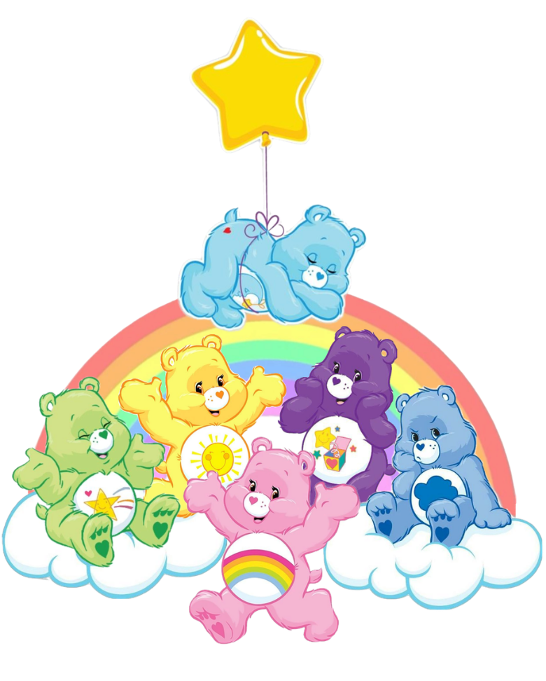

Por trás do carinho
Curiosidades dos Ursinhos Carinhosos
Os Ursinhos Carinhosos enfrentam desafios que vão muito além de simples aventuras, mostrando diferentes personagens e histórias ao longo de sua trajetória.
Ursinhos Carinhosos
|
Ursinhos|
CuriosidadesPor trás do carinho
Os Ursinhos Carinhosos enfrentam desafios que vão muito além de simples aventuras, mostrando diferentes personagens e histórias ao longo de sua trajetória.

Você sabia?
Cada ursinho possui uma insignia na barriga que representa sua personalidade única e dispara feixes de luz carregados de bons sentimentos.
Quando se unem, combinam a força dos seus símbolos para derrotar a amargura, a inveja e o egoísmo com uma onda coletiva de amor.
Criados na década de 1980, eles continuam ensinando crianças e adultos sobre a importância de acolher, entender e expressar emoções.